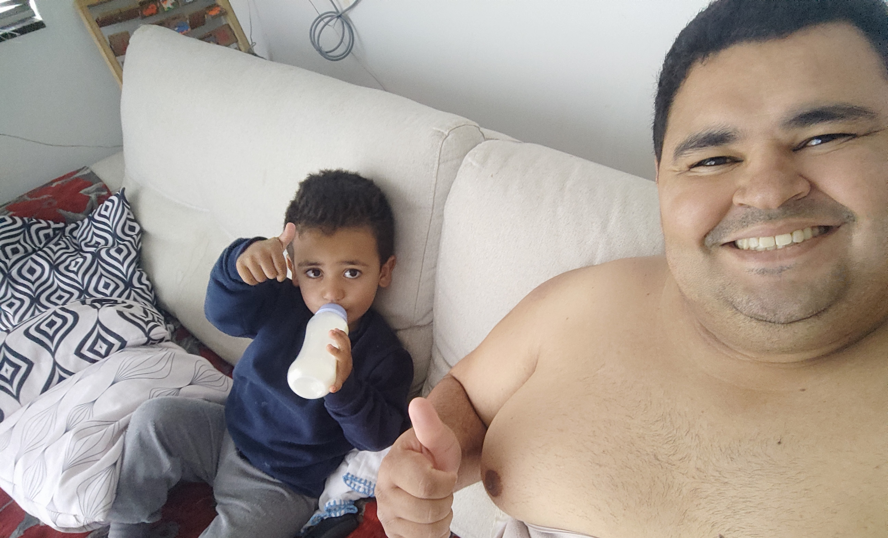

28 de setembro de 2022
Repouso na melhor companhia

Com toda certeza estar com meu amado filho todos os dias durante minha recuperação foi o melhor remédio para eu ficar bem mais o mais rápido possível, esses momentos de companheirismo, brincadeiras, bagunças, sonecas e muitos desenhos me ajudaram muito a não me concentrar na dor e na vontade que dava de comer alimentos sólidos, já que fazia 16 dias que eu só tomava líquidos 🤮